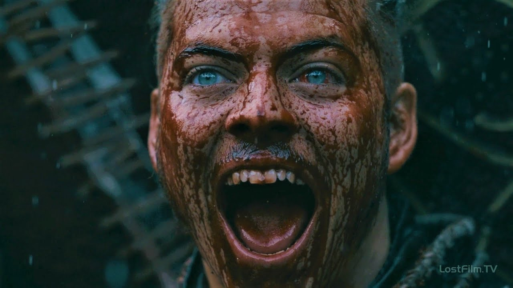
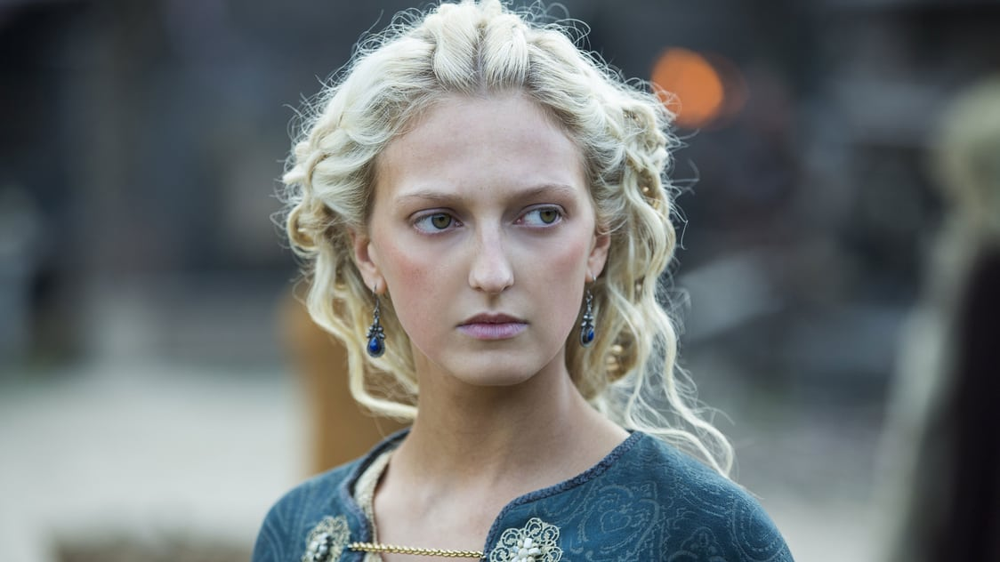
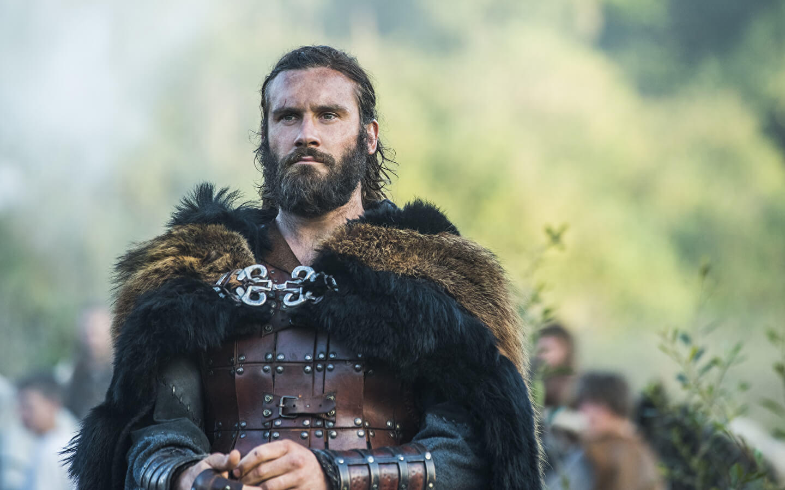
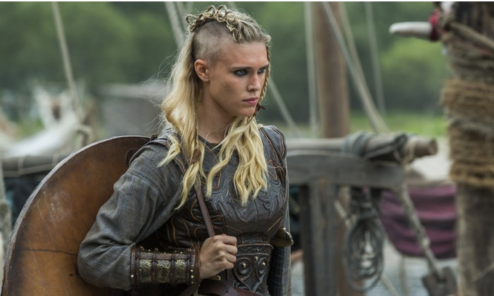
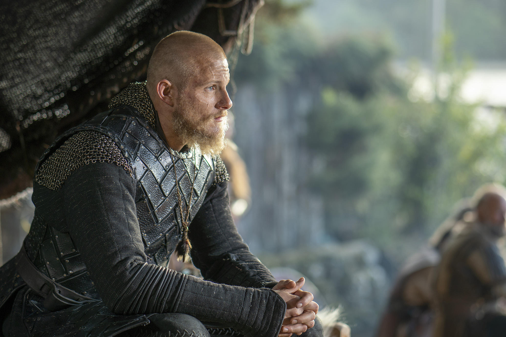
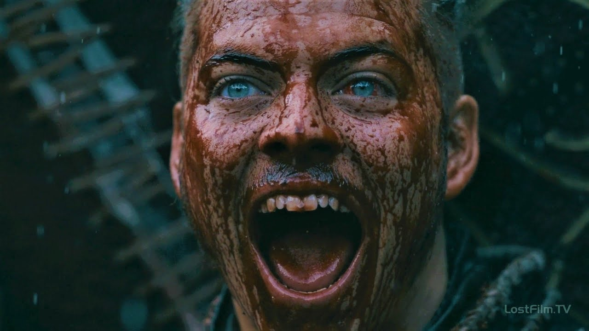
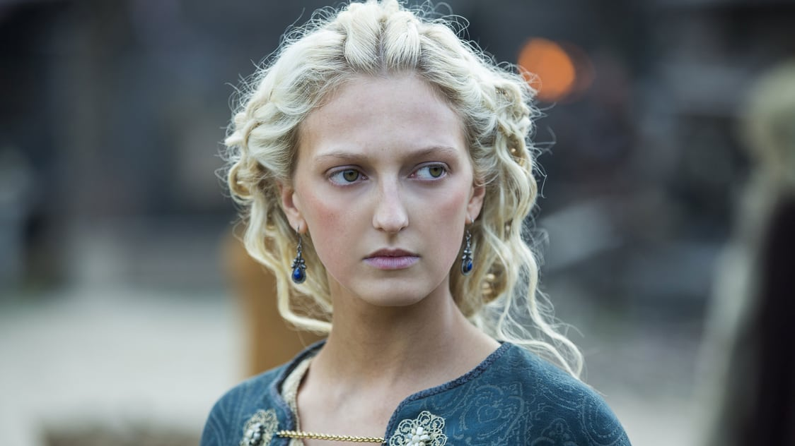
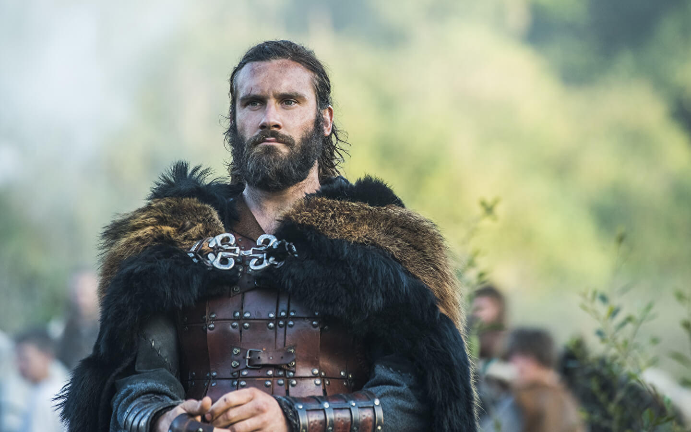
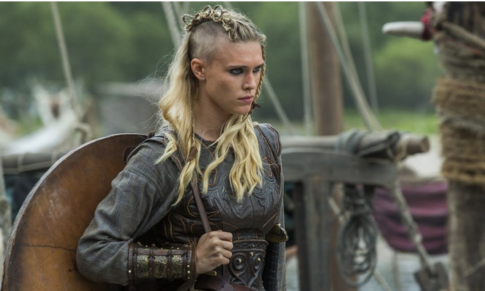
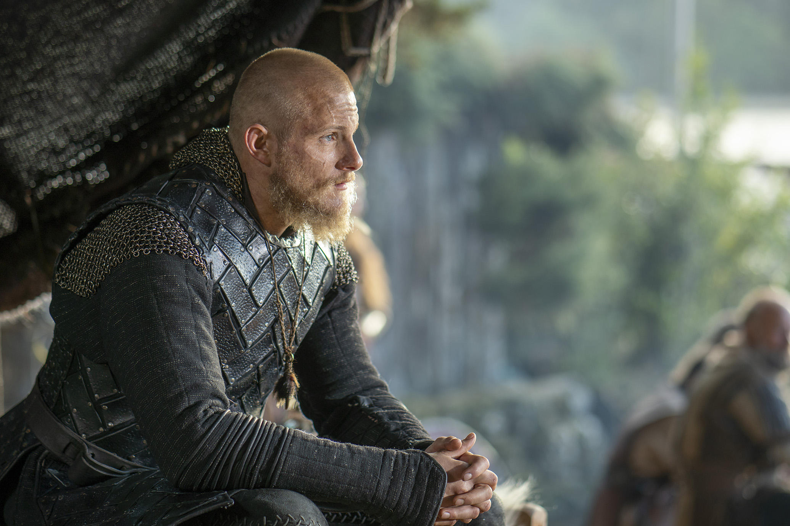

Рагнар
Рагна́р Лодбро́к (др.-сканд. Ragnarr Loðbrók) - полулегендарный скандинавский конунг из рода Инглингов, ключевой персонаж сериала.
Умелый воин и амбициозный вождь, Рагнар на протяжении почти всей своей жизни следует пути викинга. Рассекая море в поисках боевой славы и наживы, он стремится обрести новые знания, открыть неизвестные земли и изменить нелегкую судьбу своего народа, живущего в суровых условиях Скандинавского полуострова
Флоки
Флóки (др.-сканд. Flóki) - скандинавский кораблестроитель, активно участвующий в грабительских набегах викингов на страны Европы.
Близкий друг и соратник Рагнара Лодброка. Эксцентричный и чудаковатый, он живет в уединенном доме в лесу, работая в своей мастерской на берегу моря.
Возлюбленный и муж Хельги. В их браке рождается дочь Ангрбода, но она умирает от лихорадки еще маленькой.
Спустя много лет по настоянию Хельги Флоки вынужден удочерить мавританскую девочку Танарус, отношения с которой завершаются семейной трагедией.
Ивар
И́вар Беско́стный (др.-сканд. Ívarr hinn Beinlausi) - полулегендарный вождь датских викингов, известный неистовством в бою.
Самый агрессивный и неуравновешенный среди своих братьев - Уббе, Хвитсерка и Сигурда Змееглазого.
Торви
Тóрви (др.-сканд. Þórví) - девушка родом из Гёталанда, вторая жена местного правителя - ярла Борга.
После смерти мужа вступает в неудачный брак с Эрлендуром, старшим сыном датского конунга Хорика.
При нем сближается с Бьёрном Железнобоким, а после гибели Эрлендура выходит за него замуж.
Годы спустя отношения с Бьёрном распадаются, и Торви становится супругой Уббе.
Ролло
Ро́лло (или Хрольф, др.-сканд. Hrólfr, лат. Rollo, исторический прототип также известен под именами Ролло́н, Рольф и Роберт I)
- известный вождь викингов, первый герцог Нормандский, основатель Нормандской династии
В сериале - старший брат Рагнара Лодброка. Знаменитый своей силой, бесстрашием и диким,
импульсивным нравом, он активно участвует в разорительных набегах викингов на страны Европы.
Лагерта
Лаге́рта (или Хладге́рда, др.-сканд. Hlaðgerðr, лат. Ladgerda, Ladgertha или Lagertha; в сериале также носит псевдоним Ингстад)
- известная скандинавская воительница, упомянутая в хрониках Саксона Грамматика, первая жена датского морского конунга Рагнара Лодброка.
В сериале Лагерта активно участвует в походах викингов, колонизации ими новых земель и междоусобных распрях скандинавских вождей
Бьерн
Бьёрн Железнобо́кий (др.-сканд. Björn Járnsíða, швед. Björn Järnsida) - полулегендарный скандинавский конунг, основатель шведской королевской династии Мунсё.
В сериале - сын Рагнара Лодброка и Лагерты, брат Гиды, единокровный брат Уббе, Хвитсерка, Сигурда и Ивара.
Сильный и решительный человек, Бьёрн намерен стать великим воином, лидером и первооткрывателем.


 








